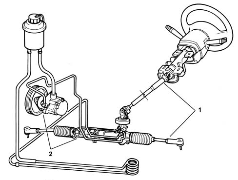

INTRODUCTION - STEERING
- Path
- Descriptions > 41 STEERING UNIT > INTRODUCTION - STEERING
- Kind
- system description
- Applies to
- engines: 1.2 8v, 1.6 16v, 1.3 JTD 16V, 1.9 JTD 8V, 1.9 DIESEL; all production periods
- Interactive page
- https://sloeber94.github.io/elrnDB-fDbl/en/#/223000232
Applies to: engines: 1.2 8v, 1.6 16v, 1.3 JTD 16V, 1.9 JTD 8V, 1.9 DIESEL; all production periods
The steering system for the standard versions is the mechanically operated rack and pinion type.
There are also plans, to fit as standard on the 1910 D version and have as an available option on the 1242 8v version a hydraulic type power assisted steering unit with an operating ration of 60 mm/rev.
It guarantees:
- lightness and easy handling of the steering in all operating conditions
- precision and safety at high speeds.
The steering column is collapsable and makes it possible to improve safety for the driver in the case of a frontal impact.
A height adjustable type steering wheel, made from mangnesium to reduce its weight and increase its strength is also available as an option.
On versions fitted with power assisted steering, in order to minimize the hydraulic impulses which could create noise, high pressure oil pipes have been fitted whose length and shape are optimum with internal resonators and a cooling coil for the power assisted steering fluid to prevent cavitation.

1, Steering control and linkage
2, Power assisted steering